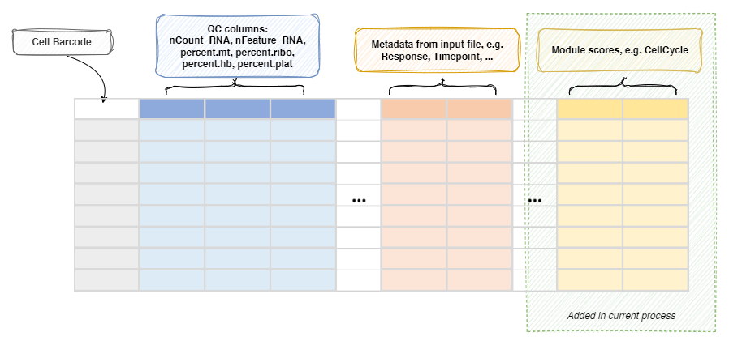

ModuleScoreCalculator¶
Calculate the module scores for each cell
The module scores are calculated by
Seurat::AddModuleScore()
or Seurat::CellCycleScoring()
for cell cycle scores.
The module scores are calculated as the average expression levels of each
program on single cell level, subtracted by the aggregated expression of
control feature sets. All analyzed features are binned based on averaged
expression, and the control features are randomly selected from each bin.
Input¶
srtobj: The seurat object loaded bySeuratClustering
Output¶
rdsfile: Default:{{in.srtobj | stem}}.qs.
The seurat object with module scores added to the metadata.
Environment Variables¶
defaults(ns): The default parameters formodules.features: The features to calculate the scores. Multiple features should be separated by comma.
You can also specifycc.genesorcc.genes.updated.2019to use the cell cycle genes to calculate cell cycle scores.
If so, three columns will be added to the metadata, includingS.Score,G2M.ScoreandPhase.
Only one type of cell cycle scores can be calculated at a time.nbin(type=int): Default:24.
Number of bins of aggregate expression levels for all analyzed features.ctrl(type=int): Default:100.
Number of control features selected from the same bin per analyzed feature.k(flag): Default:False.
Use feature clusters returned fromDoKMeans.assay: The assay to use.seed(type=int): Default:8525.
Set a random seed.search(flag): Default:False.
Search for symbol synonyms for features in features that don't match features in object?keep(flag): Default:False.
Keep the scores for each feature?
Only works for non-cell cycle scores.agg(choice): Default:mean.
The aggregation function to use.
Only works for non-cell cycle scores.mean: The mean of the expression levelsmedian: The median of the expression levelssum: The sum of the expression levelsmax: The max of the expression levelsmin: The min of the expression levelsvar: The variance of the expression levelssd: The standard deviation of the expression levels
-
modules(type=json): Default:{}.
The modules to calculate the scores.
Keys are the names of the expression programs and values are the dicts inherited fromenv.defaults.
Here are some examples -{ "CellCycle": {"features": "cc.genes.updated.2019"}, "Exhaustion": {"features": "HAVCR2,ENTPD1,LAYN,LAG3"}, "Activation": {"features": "IFNG"}, "Proliferation": {"features": "STMN1,TUBB"} }For
CellCycle, the columnsS.Score,G2M.ScoreandPhasewill be added to the metadata.S.ScoreandG2M.Scoreare the cell cycle scores for each cell, andPhaseis the cell cycle phase for each cell.You can also add Diffusion Components (DC) to the modules
{"DC": {"features": 2, "kind": "diffmap"}}will perform diffusion map as a reduction and add the first 2 components as
DC_1andDC_2to the metadata.diffmapis a shortcut fordiffusion_map. Other key-value pairs will pass todestiny::DiffusionMap().
You can later plot the diffusion map by usingreduction = "DC"inenv.dimplotsinSeuratClusterStats.
This requiresSingleCellExperimentanddestinyR packages.
-post_mutaters(type=json): Default:{}.
The mutaters to mutate the metadata after calculating the module scores.
The mutaters will be applied in the order specified.
This is useful when you want to create new scores based on the calculated module scores.
Metadata¶
The metadata of the Seurat object will be updated with the module scores:
